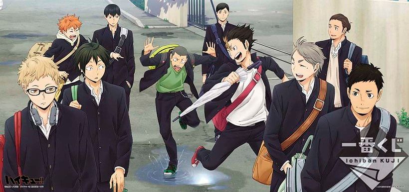
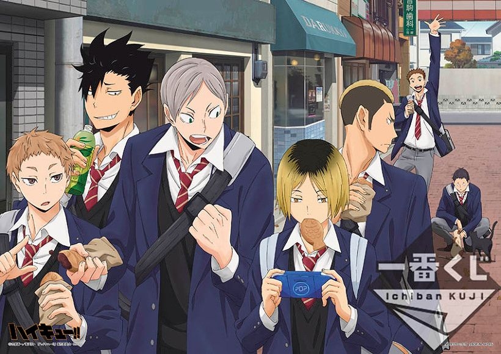
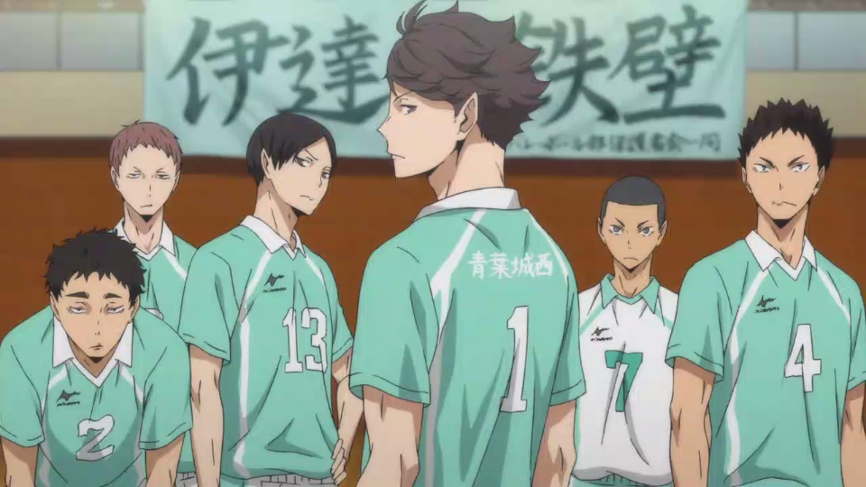
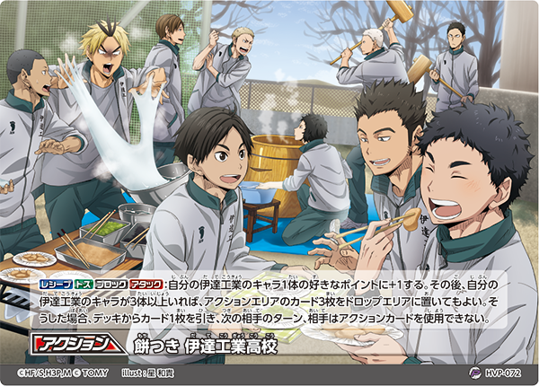
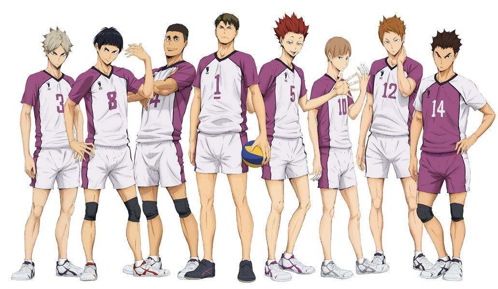

하이큐!!의 등장 학교. 미야기현 위치. 정식 명칭은 '미야기현립 카라스노 고등학교(宮城県立烏野高等学校)', 상징물은 까마귀(烏, 카라스).
5년 전까지만 해도 배구 강호교로 5년 전 작은 거인이 활동한 시기에 봄고 미야기현 대표로 전국 대회에 출장해서 3회전까지 올라갔다. 그러나 우카이 감독이 은퇴하면서 배구부는 줄곧 내리막을 걸어 작중 시점에는 잘해봐야 현내 베스트 8, 특별히 약하지도 강하지도 않은 팀이 되어버렸고 타교생들에게서는 무너진 강호, 날지 못하는 까마귀라는 별명으로 불린다.
하이큐!!의 등장 학교. 도쿄도 네리마구 위치. 정식 명칭은 '도립 네코마 고등학교(都立音駒高等学校)'. 상징물은 고양이(猫, 네코).
과거에는 배구 강호교였지만, 카라스노와 비슷한 시기를 기점으로 쇠퇴의 길을 걸었다. 그러나 네코마타 감독이 복귀한 최근 전력이 상승하여 인터하이에서는 도쿄도 베스트8이라는 성적을 기록했다. 다만 같은 도쿄에 있는 후쿠로다니 학원보다는 아래로 평가받는 모양. 실제 연습 경기 전적에서도 많이 밀리는 편이다.
하이큐!!의 등장 학교. 미야기현 위치. 정식 명칭은 '사립 아오바죠사이 고교(私立青葉城西高校)', 약칭은 '세이죠(青城)'. 상징물은 푸른 잎(青葉, 아오바).
현 내 배구 베스트 4에 드는 강호교로, 공격과 수비 모두 상향 평준화 된 팀. 우카이 케이신의 말에 따르면 현 내에서 가장 완성된 팀이라고 한다. 또한 문무양도를 지향하는 교풍 때문에 지력까지 보는 것이 정말인 듯, 모든 선수가 경기 중에 생각과 분석을 한다. 다만, 현 내 최강이라 불리는 시라토리자와때문에 전국대회 출전 경험은 없다.
하이큐!!의 등장 학교. 미야기현 위치. 약칭은 '다테공(伊達工, 다테코)'. 상징물은 방패(盾, 다테).
미야기 내 베스트 4로 평가받는 강팀으로 '철벽'이라 불리는 높은 블로킹이 특기. 그러나 작년 인터하이에서는 3회전에서 최종보스 시라토리자와와 만나는 바람에 베스트 16에 그쳐 올해 인터하이에서는 시드가 아니었다. 덕분에 다테공이 들어간 블록은 엄청난 격전지가 될 것으로 예상되었다.
하이큐!!의 등장 학교. 미야기현 위치. 정식 명칭은 '사립 시라토리자와 학원 고교(私立白鳥沢学園高校)'. 상징물은 흰머리수리.
기본적으로 전국 8강에는 들어간다고 언급될 정도의 강호. 왕자(王者)라는 별칭이 있을 정도로 미야기현에서 전국대회 단골 출장 학교로, 아오바죠사이 고교와 다테 공업 고교를 영원한 콩라인으로 밀어냈다. 다만 작중 시점에서 5년 전, 카라스노 고교에게 밀려 딱 한 번 전국대회 진출에 실패한 모양.
